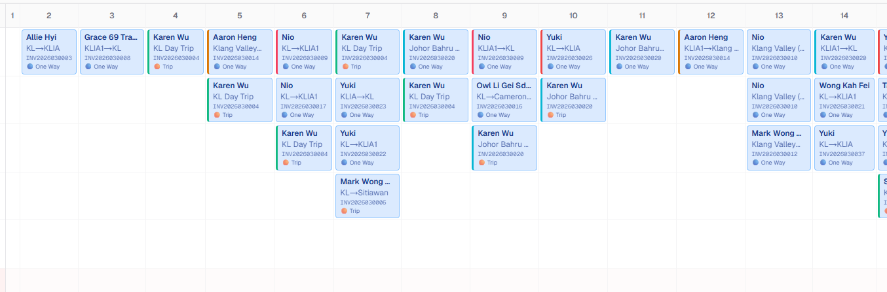

Plain English, full system view
The whole van booking system, explained from first invoice to final schedule.
This guide explains what the system does, what each screen is for, how bookings become rows, how vans are assigned, when a job becomes outsourced, and where AI or external services fit in. It is written for normal day-to-day users, not only developers.

Simple Map
The system in one sentence
Booking comes in
A booking can arrive as an uploaded PDF, a row added by staff, pasted text in Invoice Creator, or a PDF made by the separate n8n Telegram invoice bot. Everything is eventually converted into booking rows with dates, routes, customer details, price, and vehicle needs.
Start to End
Follow one booking through the system
Set up the fleet first
On the Dashboard, staff add each van plate, driver name, contact, base location, passenger capacity, and special abilities.
- Singapore enabled means this van can take Singapore routes.
- Thailand enabled means this van can take Thailand routes.
- Vehicle type matters because Toyota Alphard bookings should only use Toyota Alphard vehicles.
A booking is entered
Most bookings enter by uploading an invoice PDF from Daily Jobs or All Jobs. Staff can also add rows manually or use Invoice Creator.
- PDF upload is best when the invoice already exists.
- Invoice Creator is best when staff have messy booking text and need to create an invoice first.
- The n8n Telegram bot is separate, but it also creates invoice PDFs that can be uploaded or shared.
The PDF service extracts text
The Next.js app sends the PDF to the Python PDF service. The service uses PyMuPDF to read the text and returns plain text to the app.
- The frontend checks
NEXT_PUBLIC_PDF_SERVICE_URL/healthand shows a cold-start status if the service is sleeping. - The backend calls
/parseto get the text from the PDF. - If the service is down, upload preview cannot read PDFs yet.
The parser turns text into booking rows
The parser looks for invoice number, customer details, each numbered trip row, route, travel date, number of vehicles, amount, and special labels.
KL - Penangbecomes from KL to Penang.KL - Penang - KLbecomes a round trip.Alphard,15 pax, and5-seater carbecome special vehicle rules.- If one invoice needs 2 vans, the system creates 2 booking rows, one for each vehicle.
Staff checks the preview
The upload panel shows the rows before saving. This is the safety checkpoint: staff can cancel if the PDF was wrong or the rows look strange.
- Up to 20 PDFs can be selected at once.
- The preview shows date, invoice number, client, route, type, vehicle count, and amount.
- Confirming sends the preview rows to the database.
Rows are inserted into the database
The app stores rows in PostgreSQL through Drizzle ORM. While inserting, the upload panel streams progress back to the user.
- New rows start as automatic rows, meaning the scheduler is allowed to assign them.
- Car bookings are immediately marked as outsourced because the fleet vans should not take car jobs.
- Emergency Cancel can remove just-inserted rows if scheduling is still running.
The rules engine assigns vans
After insert, the current default flow runs the rules engine. It does not simply pick any van: it checks route ability, Alphard rules, 15-pax capacity, invoice continuity, double-booking, and outsource status.
- Manual locked bookings are not touched.
- Confirmed outsourced bookings are not touched.
- Unassigned rows are tried again before being marked as outsource needed.
Staff reviews the results
The system then refreshes the work screens. Daily Jobs shows one date. All Jobs shows all records. Van Schedule shows the monthly calendar.
- Conflict banners show missing vans, missing outsource companies, and double-bookings.
- Staff can edit booking fields inline.
- Staff can print, copy WhatsApp schedules, or export schedule JSON.
Remaining issues are handled by staff
If no suitable van exists, the booking is marked outsourced but still needs a company name. Once staff fill in the company, the booking is considered confirmed outsourced and protected.
- Outsource company filled in = confirmed external job.
- Manual lock = staff decision that automatic rechecks should not override.
- Recheck can be run again after changing vans, deleting bookings, or fixing details.
Work Screens
What each page is for
Van and driver management
fleetAdd van plate, driver name, contact, base location, vehicle type, passenger capacity, Singapore ability, and Thailand ability.
Bulk actions
carefulRecheck all assignments, remove duplicate bookings, seed placeholder vans, or clear all bookings. Clear actions are permanent.
| Use this when | What it helps you do |
|---|---|
| You want one day only | Pick a date, review jobs for that date, edit cells, and print the daily record. |
| You need to upload invoices | Open the floating PDF upload panel and preview parsed rows before saving. |
| You need driver messages | Build WhatsApp text blocks grouped by invoice and outsource status. |
| You need to clean mistakes | Delete a single row or delete all rows for one invoice number. |
Big table view
searchShows all bookings. Search by client, invoice, route, plate, driver, or details. Sort by date, invoice, and amount.
Best for cleanup
editGood when you do not know the date yet, or when you need to find and correct older records.
Monthly calendar
overviewRows are vans or outsource companies. Columns are dates. Each booking appears inside its van and date cell.
Conflict action table
actionShows double-booked vans, bookings with no van, and vans with no driver. Staff can pick a free van or enter an outsource company.
Bottom edit panel
detailsClick a booking to edit invoice number, route, date, driver, outsource status, overtime, notes, and manual lock.
Drag move
same dayMove a booking to a different van on the same date. Use the lock checkbox when the decision must survive future rechecks.
1. Paste text
AIPaste messy booking info. OpenRouter AI extracts customer, route, dates, vehicle count, prices, and special tags.
2. Generate PDF
invoiceThe app builds invoice HTML, gets the next invoice number, and sends it to html2pdf.app to create a PDF.
3. Schedule it
confirmConfirm and Schedule sends that new PDF through the same preview and booking insert flow.
Ask schedule questions
AIThe floating assistant talks to OpenRouter. It can answer questions, save scheduling rules, and trigger an AI recheck route.
Tool actions
lockedIts server route has tools to assign a van, mark outsource, save a rule, and run AI assignment. Direct tool changes set manual lock.
Scheduling Rules
How the system decides who gets which van
Means manualChange = 1. Automation should not move it.
O plus a company name. Treated as a staff decision.
Always outsourced. It does not use the van pool.
O without company. Still needs staff action.
Behind the Scenes
The technical pieces in layman terms
Browser
What staff see: Dashboard, Daily Jobs, All Jobs, Van Schedule, Invoice Creator, upload panel, and AI chat.
Next.js app
The main application. It handles pages, API routes, upload preview, insert, recheck, chat, invoice creation, and edits.
PostgreSQL database
The memory of the system. Stores vans, bookings, invoice counters, and saved scheduling rules.
Python PDF service
A small Flask service that reads PDF files and returns text. Needed because PDF text extraction works better in Python here.
AI and PDF tools
OpenRouter helps extract invoice text and power the assistant. html2pdf.app turns invoice HTML into PDF.
Main database tables
data| Table | Plain meaning |
|---|---|
vans | Fleet list: plate, driver, contact, capacity, location, type, SG/TH capability. |
bookings | Every trip row: invoice, client, date, route, van, driver, amount, outsource status. |
invoice_counters | Keeps the next invoice and booking number for Invoice Creator. |
scheduling_rules | Saved natural-language rules used by the AI scheduler path. |
Important API routes
routes| Route | Job |
|---|---|
/api/preview | Reads PDF and returns preview rows. |
/api/insert | Saves preview rows and runs rules recheck. |
/api/bookings | Lists, creates, or deletes booking records. |
/api/vans | Manages vans and drivers. |
/api/reassign | Runs full rules engine recheck. |
/api/chat | Connects the Schedule AI assistant to OpenRouter and tools. |
/api/invoice/extract | Uses AI to turn pasted booking text into invoice fields. |
/api/invoice/generate | Creates invoice PDF through html2pdf.app. |
Environment settings
setupDATABASE_URL, OPENROUTER_API_KEY, NEXT_PUBLIC_PDF_SERVICE_URL,
HTML2PDF_API_KEY, company info, and LOCATIONS control where the app connects and what labels it shows.
Local app command
runFrom van-scheduler, run npm run dev to start the Next.js app at http://localhost:3000.
PDF service command
runFrom van-scheduler/pdf-service, install requirements and run python main.py. It listens on port 8080 by default.
Mini Simulator
Try common situations
Separate Automation
The n8n Telegram invoice bot
What it is
TelegramThe N8n flow stuf folder contains a workflow that asks invoice questions in Telegram,
calculates totals, creates invoice HTML, converts it to PDF, sends the document back, and clears the chat session.
How it relates to the scheduler
separateIt is not the main scheduling app. Think of it as another way to create invoice PDFs. Once a PDF exists, it can follow the same upload and schedule path.
Troubleshooting
What common problems usually mean
Upload says service is cold
PDFThe Python PDF service is sleeping or not configured. Wait for it to wake up, click retry, or check NEXT_PUBLIC_PDF_SERVICE_URL.
No rows found in PDF
parseThe invoice layout may not match what the parser expects, or the PDF may not have extractable text.
Booking shows no van
conflictNo suitable van was found. Use the conflict table to assign a free van or outsource it.
Outsource company needed
actionThe system marked it outsourced, but staff still need to enter the external company name.
Van has no driver
fleetThe van exists but driver info is blank. Go to Dashboard and fill in the driver name and contact.
AI or invoice generation fails
externalCheck OPENROUTER_API_KEY for AI routes and HTML2PDF_API_KEY for invoice PDF generation.
Glossary
Words and fields in normal language
manualChange
A lock flag. If it is 1, automation should leave that booking alone.
In-house
The booking should be handled by your own fleet.
Outsourced
The booking is handled by an outside company. Company name should be filled in.
Recheck
Runs the scheduling logic again to fix assignments, conflicts, and outsource marks.
SSE stream
Real-time progress messages while upload, insert, or recheck is running.
Alphard trip
A booking that must use a Toyota Alphard vehicle, not a normal van.
15-pax trip
A booking that needs a van with capacity of at least 15 seats.
Vehicle index
When one invoice needs multiple vans, each copy gets number 1, 2, 3, and so on.
Invoice continuity
The system tries to keep the same invoice and vehicle index on the same van across dates.
Daily Checklist